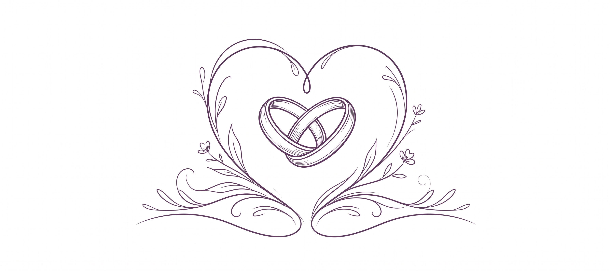

Centro de Recuerdos
Bienvenido al Centro de Recuerdos
Un espacio emocional para guardar, recorrer y seguir construyendo los recuerdos del casamiento.
Navegación inicial
Elegí una tarjeta para abrir cada parte del Centro de Recuerdos y continuar el recorrido.
Fotos de los Invitados
Tu álbum personal y los álbumes públicos de invitados.
Fotos Profesionales
La selección oficial de los novios dentro de la nueva página.
Muro de Comentarios y Saludos
El muro tipo Padlet preparado para mensajes y moderación.
Presentación
La secuencia inmersiva pensada para revivir el evento.
Fotos de los Invitados
Mi Álbum y álbumes públicos
Tu álbum personal se crea automáticamente y los álbumes públicos muestran el contenido compartido por otros invitados.
Mi Álbum
Mi álbum
Subí tus fotos y tu único video para mantenerlos ordenados en tu álbum propio.
Tu álbum está esperando recuerdos
Cuando subas la primera foto, este espacio quedará asociado a tu identidad y será visible para el resto de los invitados.
Sin álbumes visibles todavía
Cuando un invitado comparta su primera foto, su álbum aparecerá automáticamente en esta sección.
Fotos Profesionales
Álbum Oficial
La galería oficial pertenece a los novios y muestra una vista distinta según el rol activo en el dispositivo.
Selección oficial
Galería de los novios
Una selección curada con fotos destacadas del casamiento.
El álbum oficial todavía no tiene fotos
Cuando se conecte la lógica del próximo Sprint, esta galería quedará administrada por los novios desde la misma experiencia.
Muro de Comentarios y Saludos
Muro de Comentarios y Saludos
Un muro visual tipo Padlet para dejar saludos, mensajes breves y recuerdos compartidos con los novios.
Presentación
Secuencia automática
Una presentación inmersiva con fotos temporales y transición automática, pensada para acompañar la música existente.
